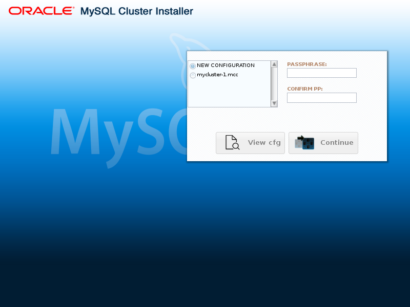

MySQL 5.7 Release Notes
The NDB Cluster Auto-Installer interface is made up of several pages, each corresponding to a step in the process used to configure and deploy an NDB Cluster. These pages are listed here, in order:
Welcome: Begin using the Auto-Installer by choosing either to configure a new NDB Cluster, or to continue configuring an existing one.
Define Cluster: Set basic information about the cluster as a whole, such as name, hosts, and load type. Here you can also set the SSH authentication type for accessing remote hosts, if needed.
Define Hosts: Identify the hosts where you intend to run NDB Cluster processes.
Define Processes: Assign one or more processes of a given type or types to each cluster host.
Define Parameters: Set configuration attributes for processes or types of processes.
Deploy Configuration: Deploy the cluster with the configuration set previously; start and stop the deployed cluster.
NDB Cluster Installer Settings and Help Menus
These menus are shown on all screens except for the Welcome screen. They provide access to installer settings and information. The menu is shown here in more detail:
The menu has the following entries:
: Save your configuration information—such as host names, process data, and parameter values—as a cookie in the browser. When this option is chosen, all information except any SSH password is saved. This means that you can quit and restart the browser, and continue working on the same configuration from where you left off at the end of the previous session. This option is enabled by default.
The SSH password is never saved; if you use one, you must supply it at the beginning of each new session.
: Shows by default advanced configuration parameters where available.
Once set, the advanced parameters continue to be used in the configuration file until they are explicitly changed or reset. This is regardless of whether the advanced parameters are currently visible in the installer; in other words, disabling the menu item does not reset the values of any of these parameters.
You can also toggle the display of advanced parameters for individual processes on the Define Parameters screen.
This option is disabled by default.
: Query new hosts automatically for hardware resource information to pre-populate a number of configuration options and values. In this case, the suggested values are not mandatory, but they are used unless explicitly changed using the appropriate editing options in the installer.
This option is enabled by default.
The installer menu is shown here:
The menu provides several options, described in the following list:
: Show the built-in user guide. This is opened in a separate browser window, so that it can be used simultaneously with the installer without interrupting workflow.
: Open the built-in user guide to the section describing the page currently displayed in the installer.
: open a dialog displaying the installer name and the version number of the NDB Cluster distribution with which it was supplied.
The Auto-Installer also provides context-sensitive help in the form of tooltips for most input widgets.
In addition, the names of most NDB configuration parameters are linked to their descriptions in the online documentation. The documentation is displayed in a separate browser window.
The next section discusses starting the Auto-Installer. The sections immediately following it describe in greater detail the purpose and function of each of these pages in the order listed previously.
The Auto-Installer is provided together with the NDB Cluster
software. Separate RPM and .deb packages
containing only the Auto-Installer are also available for many
Linux distributions. (See
Section 21.2, “NDB Cluster Installation”.)
The present section explains how to start the installer. You can do by invoking the ndb_setup.py executable.
User and privileges
You should run the ndb_setup.py as a
normal user; no special privileges are needed to do so. You
should not run this program as the
mysql user, or using the system
root or Administrator account; doing so
may cause the installation to fail.
ndb_setup.py is found in the
bin within the NDB Cluster installation
directory; a typical location might be
/usr/local/mysql/bin on a Linux system or
C:\Program Files\MySQL\MySQL Server
5.7\bin on a Windows system. This can
vary according to where the NDB Cluster software is installed
on your system, and the installation method.
On Windows, you can also start the installer by running setup.bat in the NDB Cluster installation directory. When invoked from the command line, this batch file accepts the same options as ndb_setup.py.
ndb_setup.py can be started with any of several options that affect its operation, but it is usually sufficient to allow the default settings be used, in which case you can start ndb_setup.py by either of the following two methods:
Navigate to the NDB Cluster
bindirectory in a terminal and invoke it from the command line, without any additional arguments or options, like this:shell> ndb_setup.py Running out of install dir: /usr/local/mysql/bin Starting web server on port 8081 URL is https://localhost:8081/welcome.html deathkey=627876 Press CTRL+C to stop web server. The application should now be running in your browser. (Alternatively you can navigate to https://localhost:8081/welcome.html to start it)This works regardless of operating platform.
Navigate to the NDB Cluster
bindirectory in a file browser (such as Windows Explorer on Windows, or Konqueror, Dolphin, or Nautilus on Linux) and activate (usually by double-clicking) the ndb_setup.py file icon. This works on Windows, and should work with most common Linux desktops as well.On Windows, you can also navigate to the NDB Cluster installation directory and activate the setup.bat file icon.
In either case, once ndb_setup.py is
invoked, the Auto-Installer's
Welcome
screen should open in the system's default web
browser. If not, you should be able to open the page
http://localhost:8081/welcome.html or
https://localhost:8081/welcome.html manually in the
browser.
In some cases, you may wish to use non-default settings for
the installer, such as specifying HTTPS for connections, or a
different port for the Auto-Installer's included web
server to run on, in which case you must invoke
ndb_setup.py with one or more startup
options with values overriding the necessary defaults. The
same startup options can be used on Windows systems with the
setup.bat file supplied for
such platforms in the NDB Cluster software distribution. This
can be done using the command line, but if you want or need to
start the installer from a desktop or file browser while
employing one or more of these options, it is also possible to
create a script or batch file containing the proper
invocation, then to double-click its file icon in the file
browser to start the installer. (On Linux systems, you might
also need to make the script file executable first.) If you
plan to use the Auto-Installer from a remote host, you should
start using the -S option. For information
about this and other advanced startup options for the NDB
Cluster Auto-Installer, see
Section 21.4.27, “ndb_setup.py — Start browser-based Auto-Installer for
NDB Cluster (DEPRECATED)”.
The Welcome screen is loaded in the default browser when ndb_setup.py is invoked. The first time the Auto-Installer is run (or if for some other reason there are no existing configurations), this screen appears as shown here:
In this case, the only choice of cluster listed is for configuration of a new cluster, and both the and buttons are inactive.
To create a new configuration, enter and confirm a passphrase in the text boxes provided. When this has been done, you can click to proceed to the Define Cluster screen where you can assign a name to the new cluster.
If you have previously created one or more clusters with the
Auto-Installer, they are listed by name. This example shows an
existing cluster named mycluster-1:
Figure 21.21 The NDB Cluster Auto-Installer Welcome screen, with previously created cluster mycluster-1

To view the configuration for and work with a given cluster, select the radiobutton next to its name in the list, then enter and confirm the passphrase that was used to create it. When you have done this correctly, you can click to view and edit this cluster's configuration.
The Define Cluster screen is appears following the Welcome screen, and is used for setting general properties of the cluster. The layout of the Define Cluster screen is shown here:
This screen and subsequent screens also include Settings and Help menus which are described later in this section; see NDB Cluster Installer Settings and Help Menus.
The Define Cluster screen allows you to set three sorts of properties for the cluster: cluster properties, SSH properties, and installation properties.
Cluster properties that can be set on this screen are listed here:
Cluster name: A name that identifies the cluster; in this example, this is
mycluster-1. The name is set on the previous screen and cannot be changed here.Host list: A comma-delimited list of one or more hosts where cluster processes should run. By default, this is
127.0.0.1. If you add remote hosts to the list, you must be able to connect to them using the credentials supplied as SSH properties.Application type: Choose one of the following:
: Minimal resource usage for small-scale testing. This the default. Not intended for production environments.
: Maximize performance for the given hardware.
: Maximize performance while maximizing sensitivity to timeouts in order to minimize the time needed to detect failed cluster processes.
Write load: Choose a level for the anticipated number of writes for the cluster as a whole. You can choose any one of the following levels:
: The expected load includes fewer than 100 write transactions for second.
: The expected load includes 100 to 1000 write transactions per second; this is the default.
: The expected load includes more than 1000 write transactions per second.
SSH properties are described in the following list:
Key-Based SSH: Check this box to use key-enabled login to the remote host. If checked, the key user and passphrase must also be supplied; otherwise, a user and password for a remote login account are needed.
User: Name of user with remote login access.
Password: Password for remote user.
Key user: Name of the user for whom the key is valid, if not the same as the operating system user.
Key passphrase: Passphrase for the key, if required.
Key file: Path to the key file. The default is
~/.ssh/id_rsa.
The SSH properties set on this page apply to all hosts in the cluster. They can be overridden for a given host by editing that hosts's properties on the Define Hosts screen.
Two installation properties can also be set on this screen:
Install MySQL Cluster: This setting determines the source from which the Auto-Installer installs NDB Cluster software, if any, on the cluster hosts. Possible values and their effects are listed here:
DOCKER: Try to install the MySQL Cluster Docker image fromhttps://hub.docker.com/r/mysql/mysql-cluster/on each hostREPO: Try to install the NDB Cluster software from the MySQL Repositories on each hostBOTH: Try to install either the Docker image or the software from the repository on each host, giving preference to the repositoryNONE: Do not install the NDB Cluster software on the hosts; this is the default
Open FW Ports: Check this check box to have the installer attempt to open ports required by NDB CLuster processes on all hosts.
The next figure shows the Define
Cluster page with settings for a small test cluster
with all nodes running on localhost:
After making the desired settings, you can save them to the configuration file and proceed to the Define Hosts screen by clicking the button.
If you exit the installer without saving, no changes are made to the configuration file.
The Define Hosts screen, shown here, provides a means of viewing and specifying several key properties of each cluster host:

Properties shown include the following:
Host: Name or IP address of this host
Res.info: Shows
OKif the installer was able to retrieve requested resource information from this hostPlatform: Operating system or platform
Memory (MB): Amount of RAM on this host
Cores: Number of CPU cores available on this host
MySQL Cluster install directory: Path to directory where the NDB Cluster software is installed on this host; defaults to
/usr/local/binMySQL Cluster data directory: Path to directory used for data by NDB Cluster processes on this host; defaults to
/var/lib/mysql-cluster.DiskFree: Free disk space in bytes
For hosts with multiple disks, only the space available on the disk used for the data directory is shown.
This screen also provides an extended view for each host that includes the following properties:
FDQN: This host's fully qualified domain name, used by the installer to connect with it, distribute configuration information to it, and start and stop cluster processes on it.
Internal IP: The IP address used for communication with cluster processes running on this host by processes running elsewhere.
OS Details: Detailed operating system name and version information.
Open FW: If this check box is enabled, the installer attempts to open ports in the host's firewall needed by cluster processes.
REPO URL: URL for MySQL NDB Cluster repository
DOCKER URL: URL for MySQL NDB CLuster Docker images; for NDB 8.0, this is
mysql/mysql-cluster:8.0.Install: If this check box is enabled, the Auto-Installer attempts to install the NDB Cluster software on this host
The extended view is shown here:
All cells in the display are editable, with the exceptions of those in the Host, Res.info, and FQDN columns.
Be aware that it may take some time for information to be
retrieved from remote hosts. Fields for which no value could
be retrieved are indicated with an ellipsis
(…). You can retry the fetching of
resource information from one or more hosts by selecting the
hosts in the list and then clicking the Refresh
selected host(s) button.
Adding and Removing Hosts
You can add one or more hosts by clicking the button and entering the required properties where indicated in the Add new host dialog, shown here:
This dialog includes the following fields:
Host name: A comma-separated list of one or more host names, IP addresses, or both. These must be accessible from the host where the Auto-Installer is running.
Host internal IP (VPN): If you are setting up the cluster to run on a VPN or other internal network, enter the IP address or addresses used for contact by cluster nodes on other hosts.
Key-based auth: If checked, enables key-based authentication. You can enter any additional needed information in the User, Passphrase, and Key file fields.
Ordinary login: If accessing this host using a password-based login, enter the appropriate information in the User and Password fields.
Open FW ports: Selecting this check box allows the installer try opening any ports needed by cluster processes in this host's firewall.
Configure installation: Checking this allows the Auto-Install to attempt to set up the NDB Cluster software on this host.
To save the new host and its properties, click Add. If you wish to cancel without saving any changes, click Cancel instead.
Similarly, you can remove one or more hosts using the button labelled . When you remove a host, any process which was configured for that host is also removed.
Warning
acts immediately. There is no confirmation dialog. If you remove a host in error, you must re-enter its name and properties manually using .
If the SSH user credentials on the Define Cluster screen are changed, the Auto-Installer attempts to refresh the resource information from any hosts for which information is missing.
You can edit the host's platform name, hardware resource information, installation directory, and data directory by clicking the corresponding cell in the grid, by selecting one or more hosts and clicking the button labelled Edit selected host(s). This causes a dialog box to appear, in which these fields can be edited, as shown here:
When more than one host is selected, any edited values are applied to all selected hosts.
Once you have entered all desired host information, you can use the button to save the information to the cluster's configuration file and proceed to the Define Processes screen, where you can set up NDB Cluster processes on one or more hosts.
The Define Processes screen, shown here, provides a way to assign NDB Cluster processes (nodes) to cluster hosts:
This screen contains a process tree showing cluster hosts and processes set up to run on each one, as well as a panel which displays information about the item currently selected in the tree.
When this screen is accessed for the first time for a given cluster, a default set of processes is defined for you, based on the number of hosts. If you later return to the Define Hosts screen, remove all hosts, and add new hosts, this also causes a new default set of processes to be defined.
NDB Cluster processes are of the types described in this list:
Management node. Performs administrative tasks such as stopping individual data nodes, querying node and cluster status, and making backups. Executable: ndb_mgmd.
Single-threaded data node. Stores data and executes queries. Executable: ndbd.
Multi threaded data node. Stores data and executes queries with multiple worker threads executing in parallel. Executable: ndbmtd.
SQL node. MySQL server for executing SQL queries against
NDB. Executable: mysqld.API node. A client accessing data in
NDBby means of the NDB API or other low-level client API, rather than by using SQL. See MySQL NDB Cluster API Developer Guide, for more information.
For more information about process (node) types, see Section 21.1.1, “NDB Cluster Core Concepts”.
Processes shown in the tree are numbered sequentially by type,
for each host—for example, SQL node
1, SQL node 2, and so on—to
simplify identification.
Each management node, data node, or SQL process must be assigned to a specific host, and is not allowed to run on any other host. An API node may be assigned to a single host, but this is not required. Instead, you can assign it to the special entry which the tree also contains in addition to any other hosts, and which acts as a placeholder for processes that are allowed to run on any host. Only API processes may use this entry.
Adding processes. To add a new process to a given host, either right-click that host's entry in the tree, then select the Add process popup when it appears, or select a host in the process tree, and press the button below the process tree. Performing either of these actions opens the add process dialog, as shown here:
Here you can select from among the available process types described earlier this section; you can also enter an arbitrary process name to take the place of the suggested value, if desired.
Removing processes. To delete a process, select that process in the tree and use the button.
When you select a process in the process tree, information about that process is displayed in the information panel, where you can change the process name and possibly its type. You can change a multi-threaded data node (ndbmtd) to a single-threaded data node (ndbd), or the reverse, only; no other process type changes are allowed. If you want to make a change between any other process types, you must delete the original process first, then add a new process of the desired type.
Like the Define Processes screen, this screen includes a process tree; the Define Parameters process tree is organized by process or node type, in groups labelled , , , and . An information panel displays information regarding the item currently selected. The Define Attributes screen is shown here:
The check box labelled Show advanced configuration, when checked, makes advanced options for data node and SQL node processes visible in the information pane. These options are set and used whether or not they are visible. You can also enable this behavior globally by checking under Settings (see NDB Cluster Installer Settings and Help Menus).
You can edit attributes for a single process by selecting that process from the tree, or for all processes of the same type in the cluster by selecting one of the folders. A per-process value set for a given attribute overrides any per-group setting for that attribute that would otherwise apply to the process in question. An example of such an information panel (for an SQL process) is shown here:
Attributes whose values can be overridden are shown in the information panel with a button bearing a plus sign. This button activates an input widget for the attribute, enabling you to change its value. When the value has been overridden, this button changes into a button showing an . The button undoes any changes made to a given attribute, which immediately reverts to the predefined value.
All configuration attributes have predefined values calculated by the installer, based such factors as host name, node ID, node type, and so on. In most cases, these values may be left as they are. If you are not familiar with it already, it is highly recommended that you read the applicable documentation before making changes to any of the attribute values. To make finding this information easier, each attribute name shown in the information panel is linked to its description in the online NDB Cluster documentation.
This screen allows you to perform the following tasks:
Review process startup commands and configuration files to be applied
Distribute configuration files by creating any necessary files and directories on all cluster hosts—that is, deploy the cluster as presently configured
Start and stop the cluster
The Deploy Configuration screen is shown here:
Like the
Define
Parameters screen, this screen features a
process tree which is organized by process type. Next to each
process in the tree is a status icon indicating the current
status of the process: connected
(CONNECTED), starting
(STARTING), running
(STARTED), stopping
(STOPPING), or disconnected
(NO_CONTACT). The icon shows green if the
process is connected or running; yellow if it is starting or
stopping; red if the process is stopped or cannot be contacted
by the management server.
This screen also contains two information panels, one showing the startup command or commands needed to start the selected process. (For some processes, more than one command may be required—for example, if initialization is necessary.) The other panel shows the contents of the configuration file, if any, for the given process.
This screen also contains four buttons, labelled as and performing the functions described in the following list:
: Nonfunctional in this release; implementation intended for a future release.
: Verify that the configuration is valid. Create any directories required on the cluster hosts, and distribute the configuration files onto the hosts. A progress bar shows how far the deployment has proceeded, as shown here, and a dialog is pisplayed when the deployment has completed, as shown here:
: The cluster is deployed as with , after which all cluster processes are started in the correct order.
Starting these processes may take some time. If the estimated time to completion is too large, the installer provides an opportunity to cancel or to continue of the startup procedure. A progress bar indicates the current status of the startup procedure, as shown here:
The process status icons next to the items shown in the process tree also update with the status of each process.
A confirmation dialog is shown when the startup process has completed, as shown here:
: After the cluster has been started, you can stop it using this. As with starting the cluster, cluster shutdown is not instantaneous, and may require some time complete. A progress bar, similar to that displayed during cluster startup, shows the approximate current status of the cluster shutdown procedure, as do the process status icons adjoining the process tree. The progress bar is shown here:
A confirmation dialog indicates when the shutdown process is complete:
The Auto-Installer generates a config.ini
file containing NDB node parameters for each management node,
as well as a my.cnf file containing the
appropriate options for each mysqld process
in the cluster. No configuration files are created for data
nodes or API nodes.